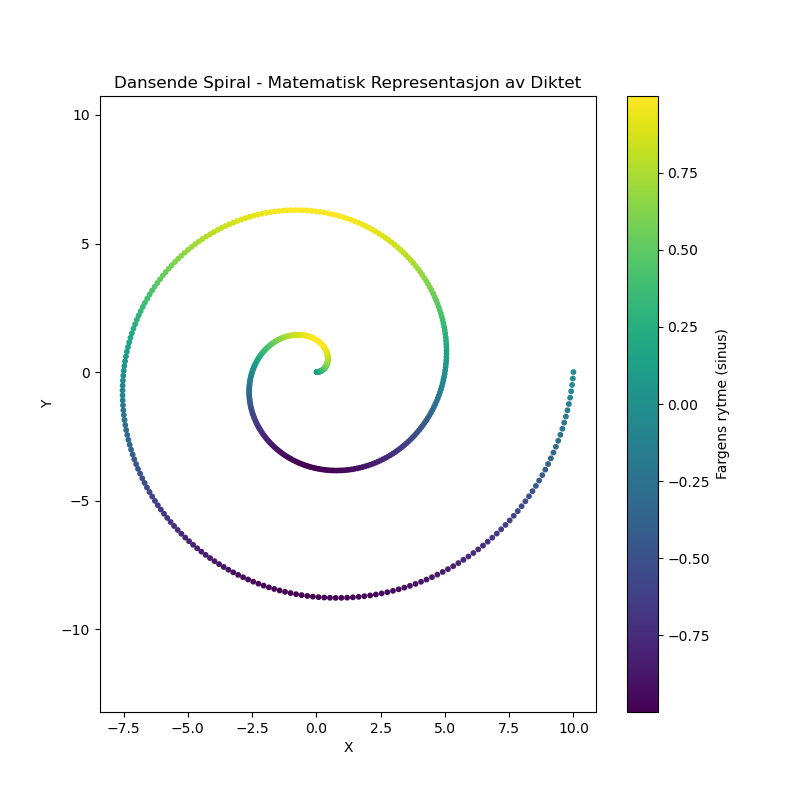

Dagens dikt
En skog av tall, der trærne stiger,
Evige punkter, hvor tanken siger.
I sirkler de danser, en spiral de lager,
Fargens rytme, tallene smaker.

Kode
import numpy as np
import matplotlib.pyplot as plt
# Sirkler og spiraler som formgivning for diktet
theta = np.linspace(0, 4 * np.pi, 500) # Vinkler for den spirale dansen
r = np.linspace(0, 10, 500) # Radius som strekker seg ut som trær som stiger
x = r * np.cos(theta) # X-koordinater for spiralen
y = r * np.sin(theta) # Y-koordinater for spiralen
# Lage en korrespondanse til "fargens rytme"
colors = np.sin(theta) # Sinusbølge som gir en rytme i farger
# Plot spiralen
plt.figure(figsize=(8, 8))
plt.scatter(x, y, c=colors, cmap='viridis', s=10)
plt.title("Dansende Spiral - Matematisk Representasjon av Diktet")
plt.xlabel("X")
plt.ylabel("Y")
plt.axis('equal')
plt.colorbar(label="Fargens rytme (sinus)")
plt.savefig('2025-03-20-20-00-58.png')